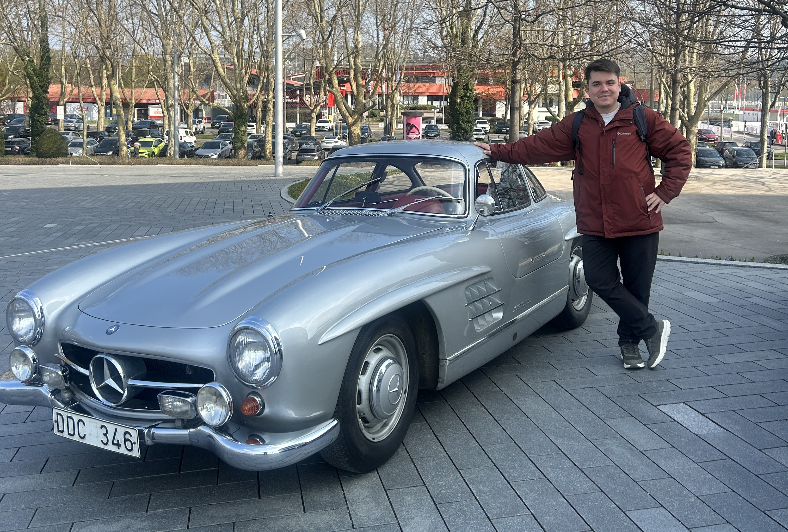

Portfolyom
Projelerimin Amaçları
Fikir aşamasından çalışan prototipe uzanan; mekanik tasarım, devre geliştirme ve gömülü yazılım süreçlerini kapsayan projelerim.
CDM
OTOMATİK KART DAĞITMA MAKİNESİ (Geliştirme Aşamasında)

Masa üstü oyun süreçlerini otomatize etmek ve hile/hata payını ortadan kaldırmak amacıyla geliştirilen bir projedir. Temel hedef; farklı oyuncu konumlarının tespiti sonrası belirlenen açılara, sürtünme bazlı mekanizma ile kartları sıkışma olmadan tekil ve seri şekilde fırlatmaktır.
Bu bir easteregg :)
HEXAPOD ROBOT
6 Bacaklı Örümcek Robot

Bu çalışma; mekanik gövde tasarımı, güç dağıtım elektroniği ve gerçek zamanlı gömülü kontrol sistemlerini bir araya getiren 18 serbestlik dereceli bir mobil robot geliştirme projesidir. Mühendislik bitirme çalışmamın ve donanım geliştirme odağımın merkezinde yer alan bu sistem; engebeli arazilerde dinamik adaptasyon sağlayabilen, çoklu bacak senkronizasyonuna dayalı bir robotik platform hedefiyle tasarlanmıştır.
Sistemin işlem birimi olarak çift çekirdekli ve yüksek işlem gücüne sahip ESP32 WROOM-32D mimarisi tercih edilmiştir. 6 bağımsız bacağın her birinde 3 serbestlik derecesi oluşturacak şekilde toplam 18 adet MG995 yüksek torklu metal dişli servo motor kullanılmıştır. Mikrodenetleyicinin işlem yükünü hafifletmek ve motor açılarındaki sinyal titremesini (jitter) engellemek adına, donanıma I2C haberleşme protokolü üzerinden kaskad bağlı 2 adet PCA9685 16 kanallı 12-bit PWM sürücü entegre edilmiştir.
Teknik Donanım ve Sistem Özellikleri
- Ana İşlemci: ESP32 WROOM-32D (Gerçek zamanlı kontrol döngüleri ve kablosuz entegrasyon altyapısı)
- Aktüatör Grubu: 18x MG995 Metal Dişli Yüksek Torklu Servo Motor
- Sürücü Ünitesi: 2x PCA9685 PWM Kontrolcü (I2C haberleşme, 12-bit çözünürlük)
- Güç Dağıtımı: Mikrodenetleyici sinyal hattını izole eden ve servoların ani pik akımlarını regüle eden özel besleme mimarisi
- Kontrol Mimarisi: Ters kinematik (Inverse Kinematics) hesaplamaları ve dinamik yürüme paternleri (gait generation)
Proje; mekanik dayanım optimizasyonları, güç tüketimi testleri ve kinematik yazılım geliştirme adımlarıyla aktif olarak sürdürülmektedir. İlerleyen süreçte devre şematiği revizyonları, bacak koordinasyon testleri ve açık kaynak dokümantasyonları düzenli olarak bu başlık altında güncellenecektir.